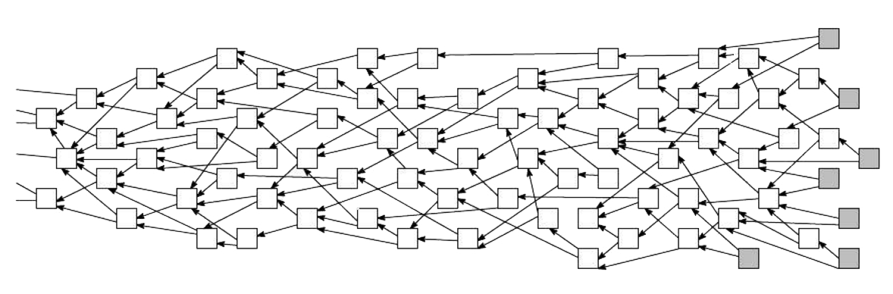

Unendliche Skalierbarkeit
Klassische Blockchains
- Aktive Teilnehmer (Miner)
- Passive Teilnehmer
Tangle

Transaktionen
- Mindestens zwei andere Transaktionen bestätigen
- Transaktionen verifizieren
- Nonce berechnen zur Spam-Verhinderung
⇒ Keine Transaktionsgebühren
Quantum Resistance
- Verwendung von hash-based signatures + Winternitz signatures
- BTC setzt auf elliptic curve cryptography (ECC)
Weitere Features